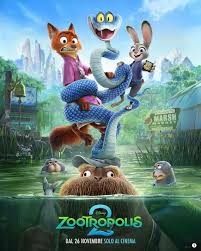
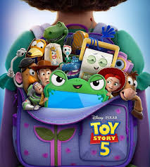

| PELÍCULAS | CARTELERA | PROMOCIONES | CINE | DULCERÍA | CINEPLUS+ |
|---|
| PELÍCULAS | TRAILER | RESEÑA | FECHA DE ESTRENO | GENERO |
|  | Judy y Nick siguen la pista de un nuevo personaje reptil que causa caos en la ciudad. | 27/11/2025 | Animación, aventura y comedia. |
| |
narra la épica lucha por el control del planeta desértico Arrakis,y sigue a Paul Atreides. | 22/10/2021 | Ciencia ficcion y novela |
 |
Woody nunca ha dudado de su lugar en el mundo por ello cuando forky aparece lo ayuda a ser un jugete. | 21/6/2019 | Animación, aventura y comedia |
 |
Hipo,un adolescente vikingo desafía la tradición milenaria al entablar amistad con un Furia Nocturna, "Chimuelo". | 13/6/2025 | fantasía, aventuras y acción familiar |
| PROXIMAMENTE | ||||
| PELÍCULAS | TRAILER | RESEÑA | FECHA DE ESTRENO | GENERO |
| un joven carismático y obsesionado con la gloria que busca triunfar en el tenis de mesa. | 25/12/2025 | Biografia, drama y deporte |
| Miranda Priestly lucha por mantener su legado en Runway ante la disminución de ingresos, enfrentándose a una nueva y poderosa Emily. | 1/5/2026 | Comedia, Drama, Película de moda/laboral |
|  | abordará cómo la tecnología se convierte en la principal fuente de entretenimiento para los niños. | 18/6/2026 | fantasía, aventuras y acción familiar |